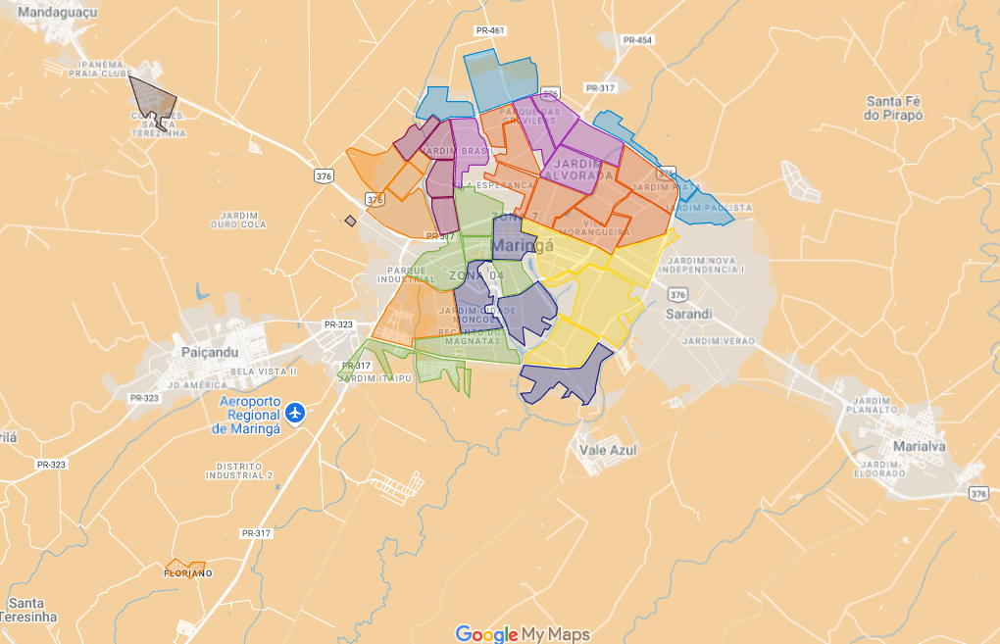

Pontos de Entrega Voluntária (PEVs)
Os Pontos de Entrega Voluntária (PEVs) são locais importantes para o descarte correto de diversos tipos de materiais recicláveis, como vidro, metal, papel e plástico, além de óleo de cozinha usado. Utilizar esses pontos é fundamental para garantir que os resíduos sejam encaminhados para a reciclagem, contribuindo para a preservação do meio ambiente e a sustentabilidade da nossa cidade.
Abaixo, você encontrará uma imagem do mapa de Maringá. **Clique na imagem para ser direcionado a um mapa interativo do Google com a localização dos principais PEVs da cidade.**
